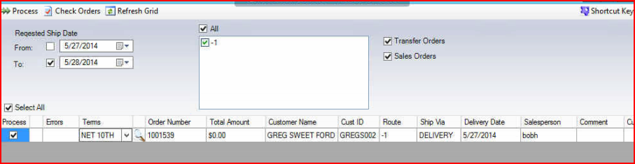
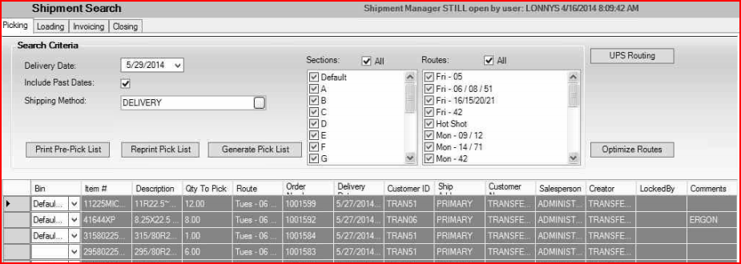
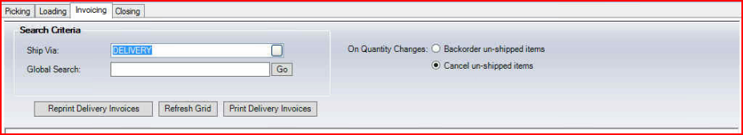
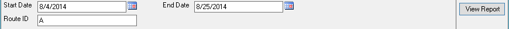

Shipment Manager (Processing Orders Through Invoicing)
From Sales Module: Select

Requested Ship Date will default to current date plus a day.
Routes are listed in center box based on orders within this screen (Orders in Open Status)
- Select Routes to process or select ALL
- Select transfer and/or sales orders
- Also gives ability to select by order number by un-checking “Select All” and checking each order to process in the process column
CHECK ORDERS OPTION: If selected, will go down through all orders and validates all orders are correct. If correct will display a green check mark, if errors will display a red X. To correct those with errors, select the magnifying glass to the left of the order number to open the order and make necessary corrections. Must be run prior to processing orders
Select Process Orders – This will mark orders with processing status (un-editable) and populate the picking tab within Shipment Manager.
From Warehousing Module: Select 

Picking Tab
- Delivery date will default to next delivery date.
- Select shipping method desired for picking
- Sections – Bin management feature – Do not use at this time
- Routes – Select routes for picking – Can be done on route by route basis or as a whole by checking ALL
- Select “Generate Pick List” and print – This will print in reverse stop order by route with page break at each route. Will also display order comments. This also moves everything to be picked to the loading tab
Loading Tab
- Select “Generate Load List and print – This gives you list by route in reverse stop order for loading. This also moves orders to invoicing tab for quantity adjustment, if necessary, and invoice generation
- Change load quantity if necessary (Can also be done in invoicing tab)
 Note: If generating pick list multiple times prior to loading, Do NOT generate pick list until you are ready or loading. This will give you’re the correct loading order no matter how many times you are creating the pick list.
Note: If generating pick list multiple times prior to loading, Do NOT generate pick list until you are ready or loading. This will give you’re the correct loading order no matter how many times you are creating the pick list.

Invoicing Tab
- Select Ship Via desired for invoicing
- Verify toggle for unshipped items is toggle to desired practice standards
- Backorder unshipped items – Will keep items in backorder status on sales order until manually cancelled. Notification of backordered items to sales staff may be necessary.
- Cancel un-shipped items – Will cancel items that were unable to ship and complete the sales order. Notification to sales staff of cancelled items may be necessary.
- Change SHIP QTY when necessary prior to printing
- Use + to open route to view orders included in route
- Use + to open order to view line items on order
- Make quantity change in ship qty column
- Print Delivery Invoices
- Select routes to print
- Invoice date equals delivery date (after 5:00p.m. date automatically changes to following day)
Routes by Stop Report (Route Manifest)
This report prints in reverse stop order by route selected. Manifest will go along with the drivers to show what stops are COD, total number of tires by stop, and total number of tires by route.

- Select Start date
- End Date will default equal to start date unless otherwise selected
- Select Route for printing
- Select view report and select print